Your music stand.
Without the mess.
Bring all your guitar tabs into a clean, offline player. No ads, no subscriptions, and no bloat. MajesticTab opens Guitar Pro files, PDFs, and text tabs. Download it free.
For iPhone, iPad, Mac, Windows, Android, Linux, and Steam Deck.
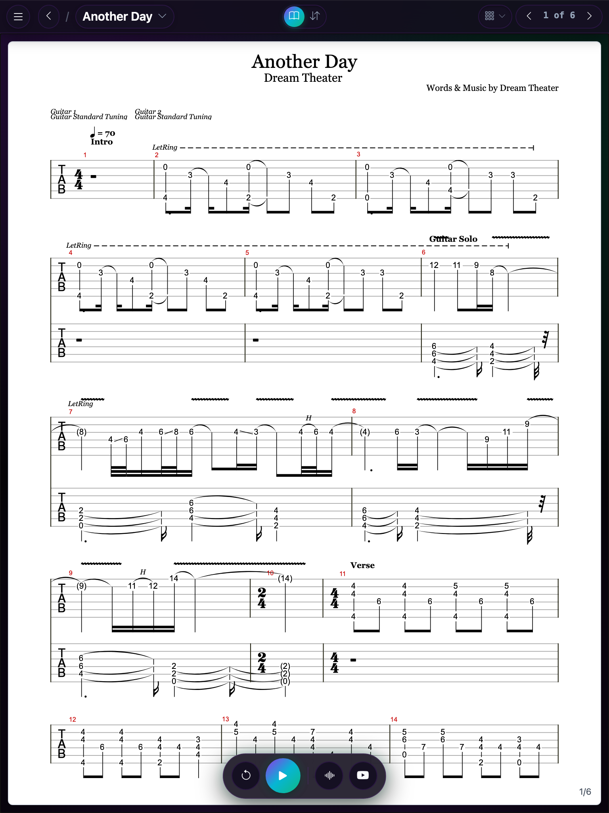
Library and your data
Your songs and albums, with your tabs linked
Add the songs or albums you play, then link your Guitar Pro, PDF, and text tabs to them. Music metadata fills in the details, and one file backs everything up.
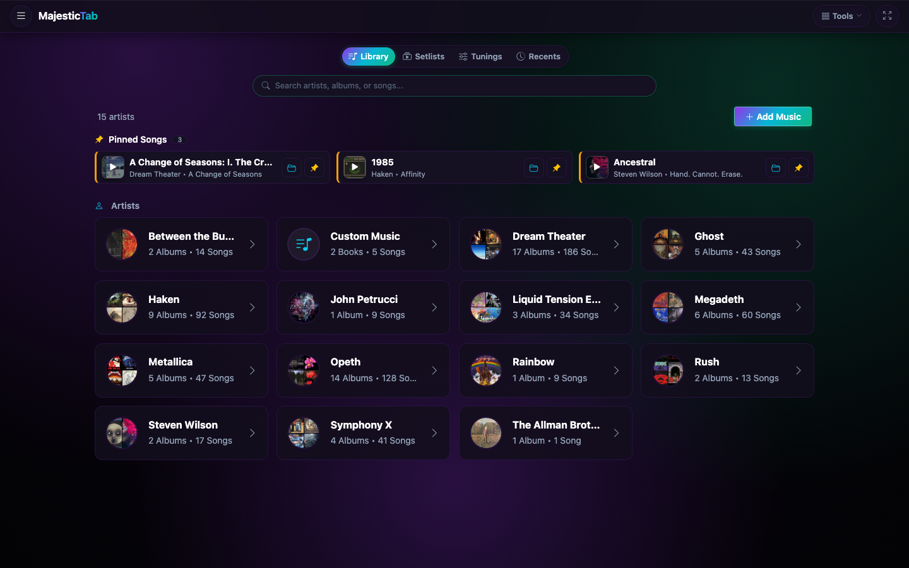
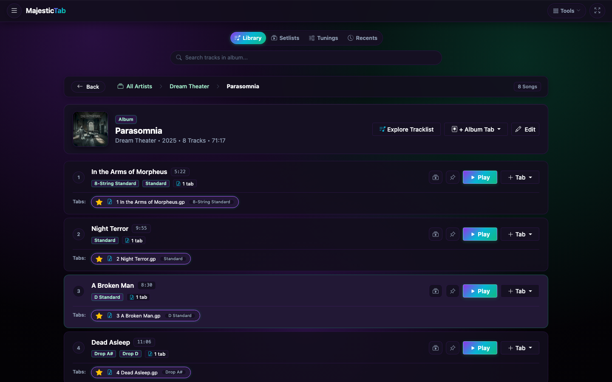
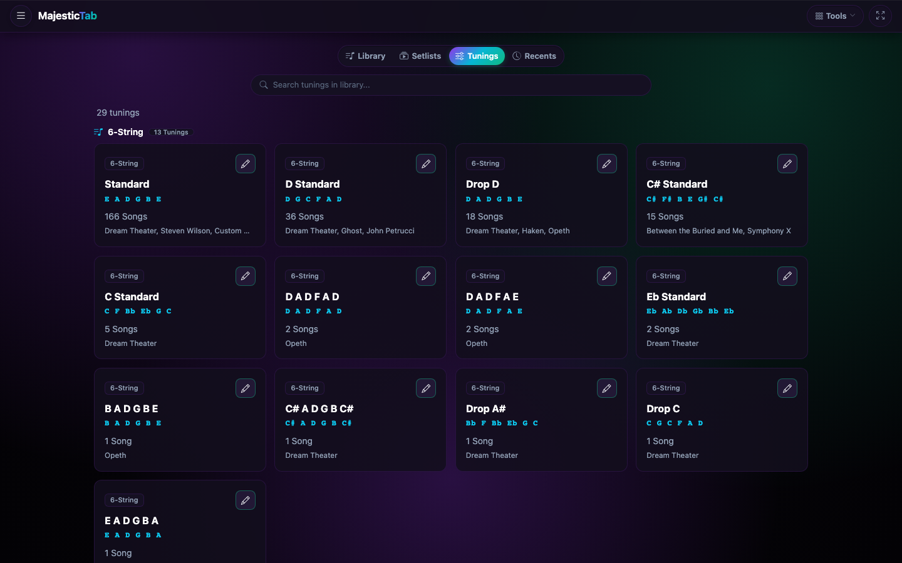
.mtbackup file.Open tabs from where they live
You choose where your tabs come from and where your backups and synced library go.
Local device
Offline-firstFiles on your computer, phone, or tablet
Open Guitar Pro (.gp, .gp3–.gp5, .gpx), text tabs, and PDFs. Tabs stay on your device unless you choose to back them up or sync them.
Cloud backup and sync
OptionalGoogle Drive, S3, or iCloud
Connect your own account to browse folders, open scores on any of your devices, keep your library in sync across multiple devices, and save full-library .mtbackup archives.
Web Search
Native appsSearch tab sites inside the app
Search the web for tabs without leaving the app. MajesticTab adds each tab you save to your library with album metadata, tuning, and track details.
One practice session
Four ways MajesticTab helps you practice
Read
All guitar parts multi-tracked together, in scroll or page mode. Open Guitar Pro, PDF, and text tabs.
Hear
Play each track, set its volume in the mixer, or play along with a YouTube backing track.
See
Follow each note on a virtual fretboard, with a color for every track.
Play together
Host a Jam on your local network so every player sees the same song at the same spot.
Read
All your guitar tracks in one view
MajesticTab shows your guitar parts together and hides drums, bass, keys, and vocals, so you never switch tracks mid-song. The layout follows a printed tab book.
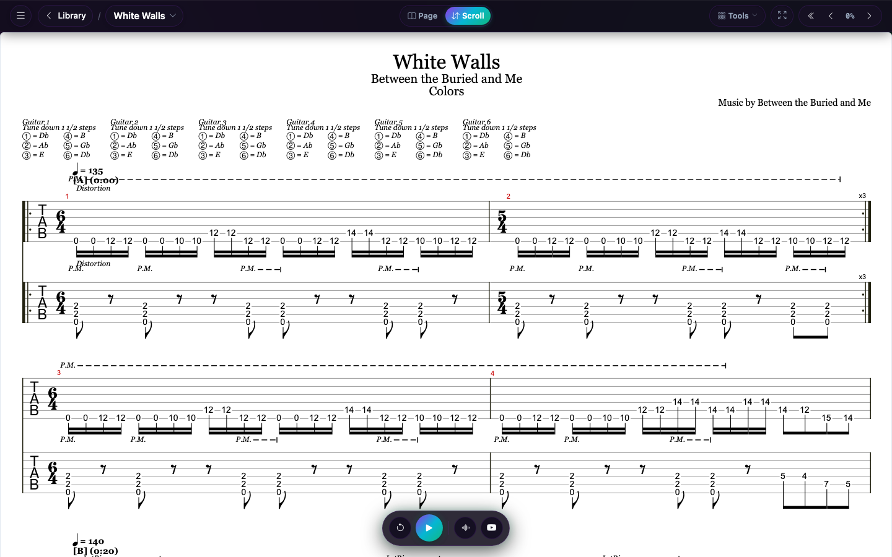
Continuous scroll or book-like pages
Switch modes at any time, on any file. On a touch screen, pinch to resize the sheet.
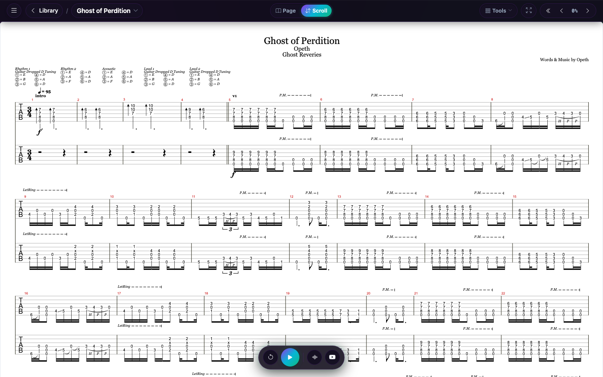
The score scrolls vertically and shows your progress. Use it to learn a song section by section.
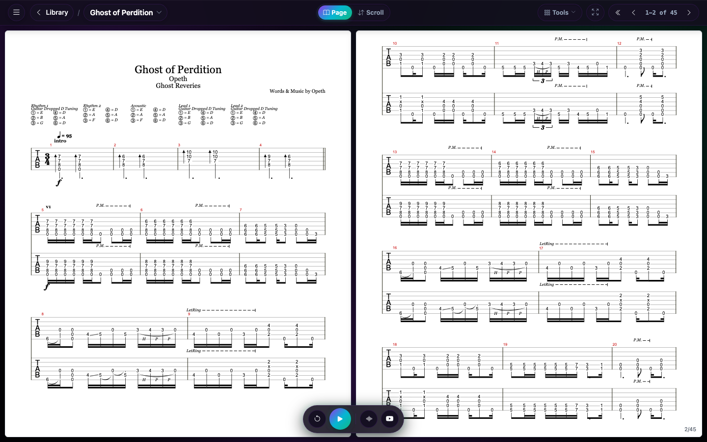
The score reads like a book: one page on a phone, two side by side on a wide screen.
A floating top bar that stays out of the way
Navigation, layout, tools, and page controls in one place.
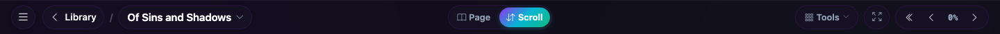
See
Follow each note on a fretboard
While a Guitar Pro tab plays, the virtual fretboard lights up the notes in the current beat. Press F to show or hide it.
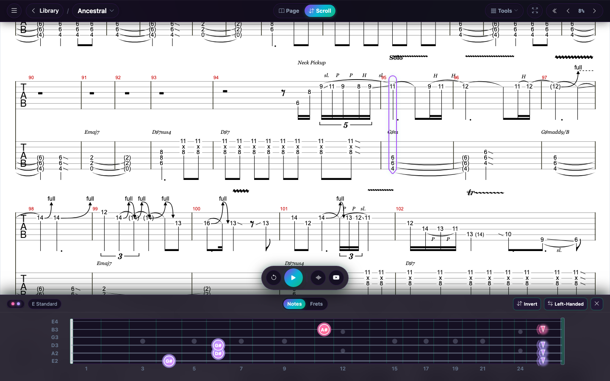
Hear
Play along with the built-in synth or YouTube
The built-in synth plays the tab with no internet connection. A YouTube panel plays the original recording or a backing track above the tab.
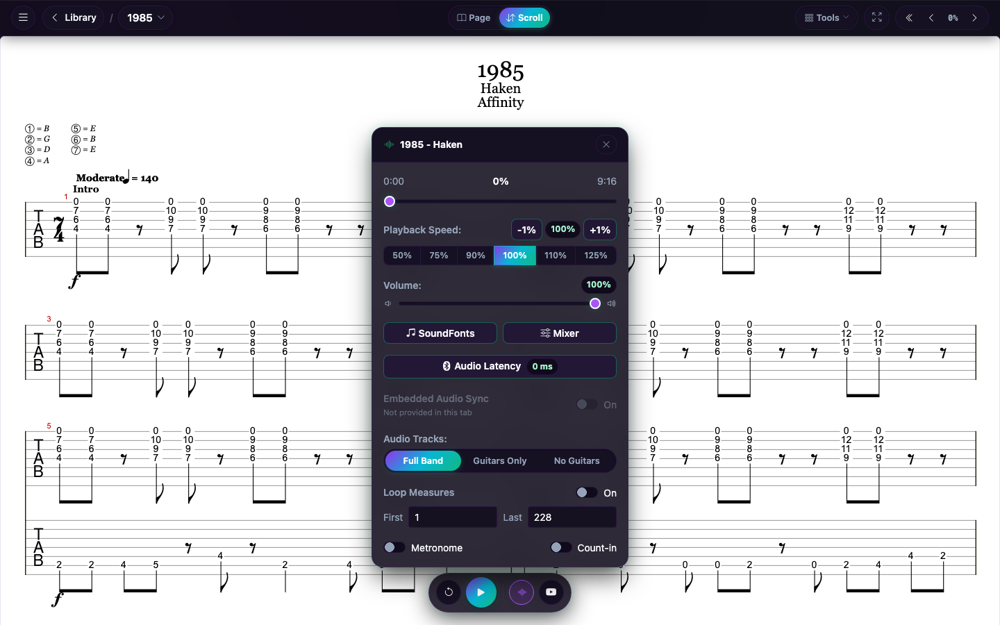
Choose the synth or link a YouTube backing track.
Practice at your own tempo
Play together
Jam on the same page, on your local network
One person hosts a session in a native MajesticTab app. Everyone else joins from the app on the same network. Playback position and YouTube stay in sync.
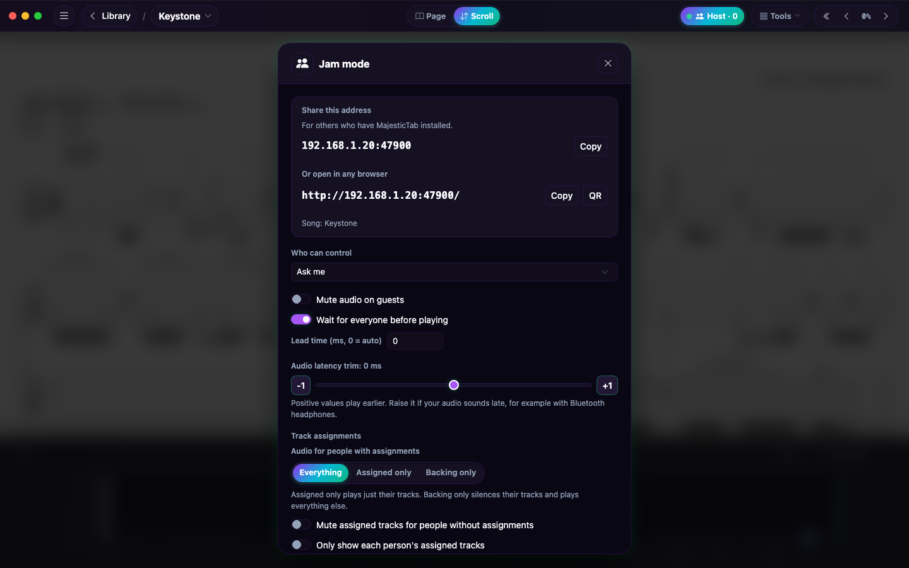
Anyone can join a Jam for free. Hosting needs a native app and is a feature in the App Store, Google Play, and Microsoft Store versions.
Simple pricing
Free to play. Everything included.
Every feature is free: no paid tier, no subscription, no ads, no trial clock.
MajesticTab
$0
A complete practice app, not a demo.
- Guitar Pro, PDF, and text tabs, with your whole library
- Multi-track playback, mixer, speed control, and YouTube backing tracks
- Virtual fretboard, tuner, and chord library
- Host or join Jam sessions on your network
- Every guitar-finish theme, with light, dark, auto, and theme-colored sheets
- Setlists, custom SoundFonts, and batch PDF export
- Foot pedal and gamepad page turning
- Backup and sync with Google Drive, S3, or iCloud
Your tabs and settings are always yours. Nothing is ever deleted or locked away, and MajesticTab never expires.
Guitar-inspired themes
Color schemes inspired by iconic electric guitar finishes. Pick Mystic Dream or any other finish, plus every sheet style.
Mystic Dream
Free
Purple Nebula
Red Nebula
Cerulean Paradise
Blue Pearl
Dark Side
Ember Glow
Snow White
Sheet styles change independently of the theme: a light sheet for paper contrast (free), a dark sheet for the stage, or one tinted to match your theme.
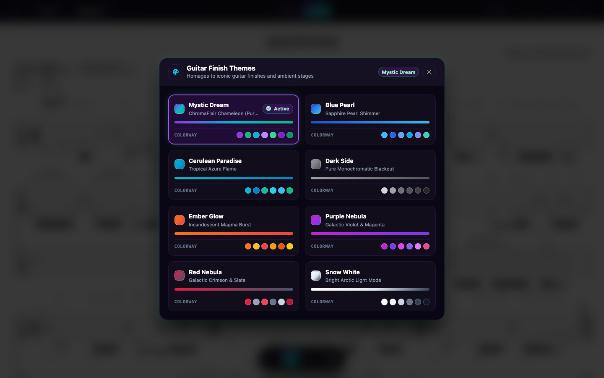
No subscription
Every feature is free. MajesticTab never expires and nothing is locked away.
Works offline
The native apps don't need an internet connection, so your tabs are ready on stage or in the rehearsal room.
Files stay on your device
MajesticTab processes your files on your device and doesn't upload them. Read the privacy policy.
Also included
Everything else a practice session needs
Tuner, tuning adapter, and chord library
Check your tuning, fit a tab to your guitar, and look up chords and scales without leaving the app.
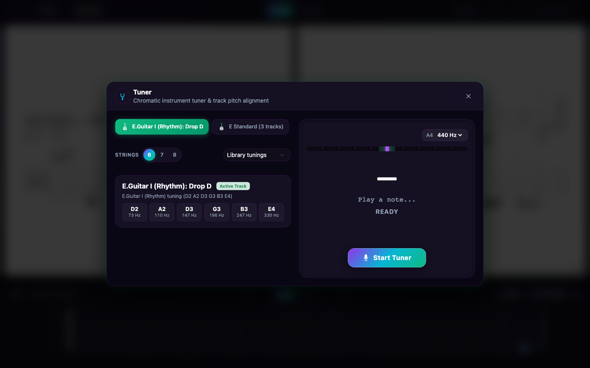
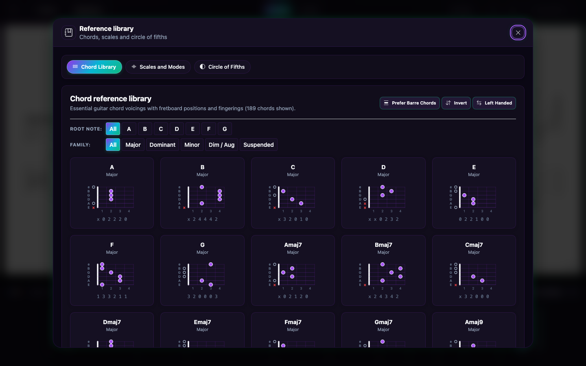
Turn pages with a foot pedal or controller
Keep both hands on your guitar. MajesticTab works with Bluetooth foot pedals (AirTurn, PageFlip, Donner), Xbox, DualShock/DualSense, and 8BitDo gamepads, and the Steam Deck.
- LB / RB Page turn
- LT / RT Analog scroll
- Y Hide the HUD
- A / B Play/pause and back
- ← / → Prev / next page
- PgUp / PgDn Prev / next page
- Space Play / pause
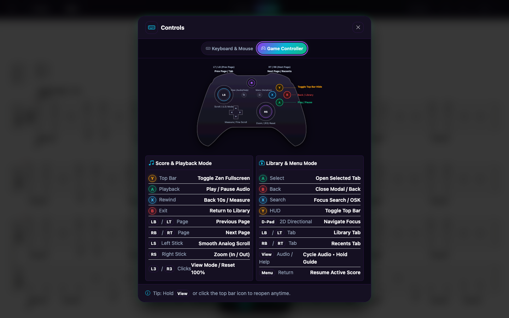
An in-app guide shows every mapping, any time.
Built for practice, with tools for PDF tabs
Notation editors are made for writing music. MajesticTab is made for reading and practicing it.
Open and go
Pick a PDF, a Guitar Pro file, or a text file. No account or project needed.
Fills your screen
Margins are trimmed and notation scales to your display, so you see more music per screen.
Export to PDF
Save what you see as a printable A4 PDF to print, share with bandmates, or open on another device.
Condense PDF EXPERIMENTAL
For multi-track tab PDFs, MajesticTab drops empty staves and redraws the groups to shorten the PDF.
Free to download
Get it from your app store
Download MajesticTab free. It is a native app that runs offline, with every feature included.
iPhone and iPad
Native app for iPhone and iPad.
MajesticTab is not yet on the App Store, so the IPA must be sideloaded with a tool such as SideStore, AltStore, LiveContainer, or Sideloadly. Or add our SideStore source: .
Mac
Native app for Apple Silicon and Intel Macs.
Windows
Native app for Windows 10 and 11.

Or install with winget: winget install majestictab
Linux and Steam Deck
Flatpak with Steam Big Picture artwork.